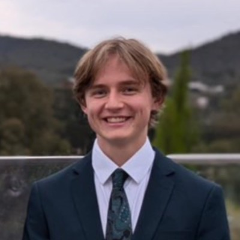
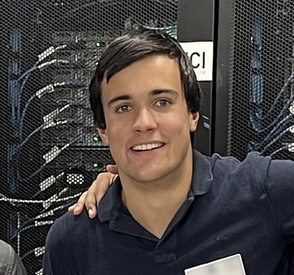
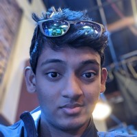
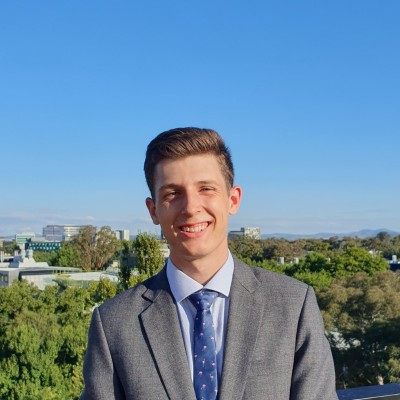
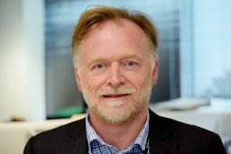

The Australian National University (ANU) proudly presents its flagship supercomputing delegation at the Supercomputing Conference 2025 (SC25). Composed of many dedicated specialists in high-performance computing and parallel processing, our team embodies ANU's commitment to innovation and excellence on the global stage.
I am currently studying a Bachelor of Advanced Computing whilst also employed at a school teaching programming to years 7 through to 12. Alongside my studies and teaching, I'm deeply invested in music. I play French horn in an orchestra and dabble in composition when I find the time. Music offers me both a creative outlet and a chance to unwind from my busy schedule. Outside of academics and music, my love for photography around Canberra's bushland with friends continues to be a source of inspiration, offering moments of tranquillity amidst life's hustle and bustle.

I am currently studying a Bachelor of Advanced Computing, majoring in Cyber Security, and specialising in Human Computer Interaction. With this, I am currently interning as a Data Engineer and working as a Live Events Technician so it’s safe to say that I have a few different interests. In my spare time, I enjoy playing the guitar, playing Field Hockey for the ANU, Photography, and Skiing. As a bit of a “Jack of all trades, master of none” person, I am not specifically sure what I intend to do for my future career, but as long as I have a computer in front of me, good people around me, and a clear goal to work towards, I will give my all and achieve at the highest level.

I am a 3rd year studying Software Engineering at the Australian National University as I love using programming to solve problems. I specialise in mechatronics, focusing on the integration of hardware and software systems. I have 2 years of experience working as a software developer in Canberra. I have been successful at multiple team engineering competitions such as ACT Robocup and ANU GameJam. I enjoy sports participating weekly in a social baseball team and having won several Orienteering and Rogaining competitions. In my spare time I go for training runs and play trading card games.
I'm Ayush, a passionate Software Developer driven by a love for technology, innovation, and the power of impactful software. My professional journey is marked by a relentless pursuit of solutions, an unwavering commitment to lifelong learning, and a zest for tackling challenges head-on. As a Software Developer, my goal is to create technology solutions that are not only innovative but also meaningful and transformative. Whether it's through advanced blockchain applications or robust web development, I aim to contribute significantly to projects that redefine the tech landscape and have a lasting positive impact on society.

Hi everyone! I am currently exploring a Software Engineering degree along with dedicating time to business management while also being a part time Technical Consultant. This blend of real world experience with infrastructure along with the experience I have gained developing programs has resulted in me slotting nicely into being a passionate and dedicated backend developer. My future vision involves making technology more accessible, particularly focusing on Augmented Reality and Virtual Reality. I always put myself out there, never staying comfortable and always eager to learn as well as helping others do their best.
I am a fourth year student studying computing at the Australian National University. I spend my time analysing the programs that run on the cluster and optimise the applications based on my analysis.

I am in my third year of a Software Engineering degree at the ANU, which is where I spend most of my week. I was drawn to computing as I’ve always really enjoyed technical problem solving. Outside of study I enjoy speedcubing, where I’ve competed in the world championships in 2019, and Oceanic championships in 2022. Music is also a big passion of mine. I’m a self-taught pianist, which has helped with my ventures in producing and publishing my own songs. Leading a sound team at my church has allowed me to use these skills to serve others. I always make the most of the quiet parts of the semester to work on new music (the backlog of unfinished ideas is very long).

Prof. John Taylor is a Professor in the School of Computing at the ANU's College of Engineering, Computing and Cybernetics, and also serves as a Visiting Scientist at CSIRO. With extensive experience in high-performance computing, Dr Taylor collaborated with XENON in 2008 to develop one of the earliest NVIDIA GPU-based supercomputer clusters. Additionally, he has contributed to the global HPC community through his roles as a member of the Gordon Bell prize committee and as Chair of the Gordon Bell Climate prize committee.
I am currently studying a Bachelor of Advanced Computing whilst also employed at a school teaching programming to years 7 through to 12. Alongside my studies and teaching, I'm deeply invested in music. I play French horn in an orchestra and dabble in composition when I find the time. Music offers me both a creative outlet and a chance to unwind from my busy schedule. Outside of academics and music, my love for photography around Canberra's bushland with friends continues to be a source of inspiration, offering moments of tranquillity amidst life's hustle and bustle.
Hi everyone! I am currently exploring a Software Engineering degree along with dedicating time to business management while also being a part time Technical Consultant. This blend of real world experience with infrastructure along with the experience I have gained developing programs has resulted in me slotting nicely into being a passionate and dedicated backend developer. My future vision involves making technology more accessible, particularly focusing on Augmented Reality and Virtual Reality. I always put myself out there, never staying comfortable and always eager to learn as well as helping others do their best.
I am currently studying a Bachelor of Advanced Computing, majoring in Cyber Security, and specialising in Human Computer Interaction. With this, I am currently interning as a Data Engineer and working as a Live Events Technician so it’s safe to say that I have a few different interests. In my spare time, I enjoy playing the guitar, playing Field Hockey for the ANU, Photography, and Skiing. As a bit of a “Jack of all trades, master of none” person, I am not specifically sure what I intend to do for my future career, but as long as I have a computer in front of me, good people around me, and a clear goal to work towards, I will give my all and achieve at the highest level.
I am a fourth year student studying computing at the Australian National University. I spend my time analysing the programs that run on the cluster and optimise the applications based on my analysis.
I am a 3rd year studying Software Engineering at the Australian National University as I love using programming to solve problems. I specialise in mechatronics, focusing on the integration of hardware and software systems. I have 2 years of experience working as a software developer in Canberra. I have been successful at multiple team engineering competitions such as ACT Robocup and ANU GameJam. I enjoy sports participating weekly in a social baseball team and having won several Orienteering and Rogaining competitions. In my spare time I go for training runs and play trading card games.
I am in my third year of a Software Engineering degree at the ANU, which is where I spend most of my week. I was drawn to computing as I’ve always really enjoyed technical problem solving. Outside of study I enjoy speedcubing, where I’ve competed in the world championships in 2019, and Oceanic championships in 2022. Music is also a big passion of mine. I’m a self-taught pianist, which has helped with my ventures in producing and publishing my own songs. Leading a sound team at my church has allowed me to use these skills to serve others. I always make the most of the quiet parts of the semester to work on new music (the backlog of unfinished ideas is very long).
I'm Ayush, a passionate Software Developer driven by a love for technology, innovation, and the power of impactful software. My professional journey is marked by a relentless pursuit of solutions, an unwavering commitment to lifelong learning, and a zest for tackling challenges head-on. As a Software Developer, my goal is to create technology solutions that are not only innovative but also meaningful and transformative. Whether it's through advanced blockchain applications or robust web development, I aim to contribute significantly to projects that redefine the tech landscape and have a lasting positive impact on society.
Prof. John Taylor is a Professor in the School of Computing at the ANU's College of Engineering, Computing and Cybernetics, and also serves as a Visiting Scientist at CSIRO. With extensive experience in high-performance computing, Dr Taylor collaborated with XENON in 2008 to develop one of the earliest NVIDIA GPU-based supercomputer clusters. Additionally, he has contributed to the global HPC community through his roles as a member of the Gordon Bell prize committee and as Chair of the Gordon Bell Climate prize committee.
Email us at u7681327@anu.edu.au